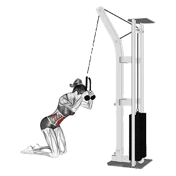

Crunch en cable
Crunch en cable permite consultar el peso medio y los estándares de fuerza como referencia dentro de core. Los músculos principales son Recto abdominal.

Peso medio: Intermedio
Referencia para una persona de nivel intermedio.
Hombres
169 lb
Mujeres
126 lb
Peso medio de Crunch en cable [1RM]
| Nivel | ||
|---|---|---|
| Principiante | 40 lb | 26 lb |
| Novato | 92 lb | 65 lb |
| Intermedio | 169 lb | 126 lb |
| Avanzado | 269 lb | 208 lb |
| Élite | 386 lb | 304 lb |
Nota: estos estándares son estimaciones de 1RM basadas en levantadores promedio. Pueden variar según el peso corporal, la edad y otros factores personales. Consulta los datos detallados en la tabla inferior.
Estándares de fuerza de Crunch en cable (lb)
Hombres por peso corporal (lb) [1RM]
| Peso corporal | Principiante | Novato | Intermedio | Avanzado | Élite |
|---|---|---|---|---|---|
| 110 | 16 | 50 | 107 | 186 | 281 |
| 120 | 20 | 58 | 119 | 201 | 299 |
| 130 | 25 | 65 | 129 | 215 | 316 |
| 140 | 29 | 73 | 140 | 228 | 333 |
| 150 | 34 | 80 | 150 | 241 | 348 |
| 160 | 39 | 87 | 160 | 253 | 363 |
| 170 | 43 | 94 | 169 | 265 | 377 |
| 180 | 48 | 101 | 178 | 277 | 391 |
| 190 | 53 | 108 | 187 | 288 | 404 |
| 200 | 57 | 115 | 196 | 298 | 416 |
| 210 | 62 | 121 | 204 | 309 | 429 |
| 220 | 66 | 127 | 212 | 319 | 440 |
| 230 | 71 | 134 | 220 | 328 | 452 |
| 240 | 75 | 140 | 228 | 338 | 463 |
| 250 | 80 | 145 | 235 | 347 | 474 |
| 260 | 84 | 151 | 243 | 356 | 484 |
| 270 | 88 | 157 | 250 | 365 | 494 |
| 280 | 92 | 163 | 257 | 373 | 504 |
| 290 | 97 | 168 | 264 | 381 | 514 |
| 300 | 101 | 173 | 271 | 389 | 523 |
| 310 | 105 | 179 | 277 | 397 | 532 |
Hombres por edad [1RM]
| Edad | Principiante | Novato | Intermedio | Avanzado | Élite |
|---|---|---|---|---|---|
| 15 | 34 | 78 | 144 | 229 | 329 |
| 20 | 39 | 90 | 165 | 262 | 377 |
| 25 | 40 | 92 | 169 | 269 | 386 |
| 30 | 40 | 92 | 169 | 269 | 386 |
| 35 | 40 | 92 | 169 | 269 | 386 |
| 40 | 40 | 92 | 169 | 269 | 386 |
| 45 | 38 | 87 | 160 | 255 | 367 |
| 50 | 36 | 82 | 150 | 240 | 344 |
| 55 | 33 | 76 | 139 | 222 | 318 |
| 60 | 30 | 69 | 127 | 202 | 290 |
| 65 | 27 | 62 | 115 | 183 | 262 |
| 70 | 24 | 56 | 103 | 164 | 235 |
| 75 | 22 | 50 | 92 | 147 | 211 |
| 80 | 20 | 45 | 82 | 131 | 188 |
| 85 | 18 | 40 | 74 | 118 | 169 |
| 90 | 16 | 36 | 66 | 106 | 152 |
Mujeres por peso corporal (lb) [1RM]
| Peso corporal | Principiante | Novato | Intermedio | Avanzado | Élite |
|---|---|---|---|---|---|
| 90 | 6 | 28 | 67 | 124 | 194 |
| 100 | 10 | 35 | 79 | 140 | 214 |
| 110 | 14 | 43 | 90 | 155 | 233 |
| 120 | 19 | 51 | 102 | 170 | 251 |
| 130 | 24 | 59 | 113 | 184 | 268 |
| 140 | 29 | 67 | 123 | 197 | 284 |
| 150 | 34 | 75 | 134 | 210 | 300 |
| 160 | 39 | 82 | 144 | 223 | 315 |
| 170 | 44 | 90 | 154 | 235 | 329 |
| 180 | 50 | 97 | 163 | 247 | 343 |
| 190 | 55 | 104 | 173 | 258 | 356 |
| 200 | 60 | 111 | 182 | 269 | 369 |
| 210 | 65 | 118 | 190 | 280 | 382 |
| 220 | 70 | 125 | 199 | 291 | 394 |
| 230 | 75 | 132 | 207 | 301 | 406 |
| 240 | 80 | 138 | 216 | 311 | 417 |
| 250 | 85 | 144 | 224 | 320 | 428 |
| 260 | 90 | 151 | 232 | 330 | 439 |
Mujeres por edad [1RM]
| Edad | Principiante | Novato | Intermedio | Avanzado | Élite |
|---|---|---|---|---|---|
| 15 | 22 | 56 | 108 | 177 | 259 |
| 20 | 25 | 64 | 123 | 202 | 296 |
| 25 | 26 | 65 | 126 | 208 | 304 |
| 30 | 26 | 65 | 126 | 208 | 304 |
| 35 | 26 | 65 | 126 | 208 | 304 |
| 40 | 26 | 65 | 126 | 208 | 304 |
| 45 | 24 | 62 | 120 | 197 | 288 |
| 50 | 23 | 58 | 113 | 185 | 270 |
| 55 | 21 | 54 | 104 | 171 | 250 |
| 60 | 19 | 49 | 95 | 156 | 228 |
| 65 | 17 | 44 | 86 | 141 | 206 |
| 70 | 16 | 40 | 77 | 127 | 185 |
| 75 | 14 | 36 | 69 | 113 | 166 |
| 80 | 12 | 32 | 62 | 101 | 148 |
| 85 | 11 | 29 | 55 | 91 | 133 |
| 90 | 10 | 26 | 50 | 82 | 120 |
Nota: el peso indicado en máquinas y cables puede variar según el fabricante. Úsalo como referencia para comparar en equipos con condiciones similares.
Músculos trabajados
| Grupo | Músculos |
|---|---|
| Músculos principales | Recto abdominal |
| Músculos secundarios | Oblicuo externo |
| Estabilizadores | Recto abdominal, Oblicuo externo |
| Agarre | Ninguno |
Registra y analiza en la app Shiba
Consulta pesos, repeticiones y progreso en un solo lugar.
Cómo leer la tabla
| Nivel | Descripción | Distribución |
|---|---|---|
| Principiante | Domina la técnica correcta y entrena de forma constante durante al menos 1 mes. | Parte inferior 5% |
| Novato | Entrena de forma constante durante al menos 6 meses. | Top 80% |
| Intermedio | Entrena de forma constante durante al menos 2 años. | Top 50% |
| Avanzado | Entrena de forma constante durante más de 5 años. | Top 20% |
| Élite | Entrena este ejercicio de forma especializada durante más de 5 años. | Top 5% |
Otros ejercicios
Core
Crunch sentado en máquina
Core / Máquina
Crunch abdominal
Core / Peso corporal
Flexión lateral con mancuernas
Core / Mancuernas
Woodchopper en cable
Core / Cable
Elevación de piernas colgado
Core / Peso corporal
Giro ruso
Core / Peso corporal
Elevación de piernas tumbado
Core / Peso corporal
Sit-ups declinado
Core / Peso corporal
Elevación de rodillas colgado
Core / Peso corporal
Rueda abdominal
Core
Toes-to-bar
Core / Peso corporal
Crunch declinado
Core / Peso corporal